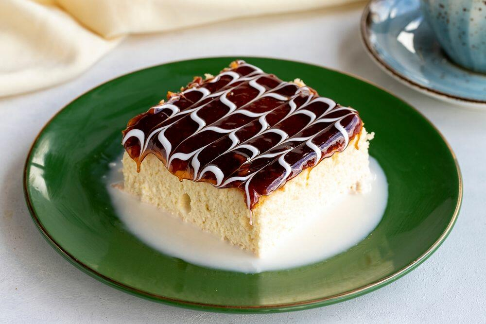

Back
Trilece

Description
Trilece is a soft and spongy cake soaked in a blend of three types of milk, topped with a layer of caramel.
Ingridients
- 4 eggs
- 100g sugar
- 120g flour
- 1 tsp baking powder
- 400ml whole milk
- 200ml condensed milk
- 200ml evaporated milk
- caramel syrup
Steps
- Whisk eggs and sugar until fluffy, fold in flour and baking powder
- Bake in a preheated oven at 180 degrees Celsius for 25 minutes
- Mix the three milks and pour over the cooled cake
- Add caramel on top, and chill